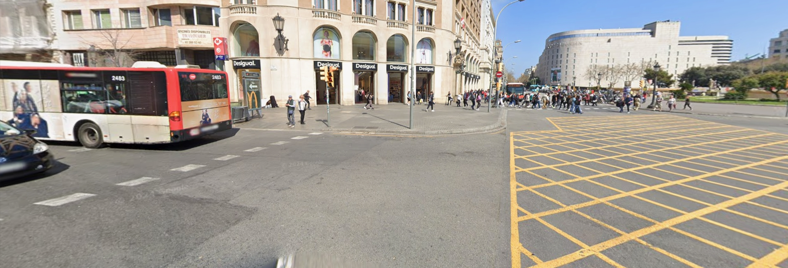
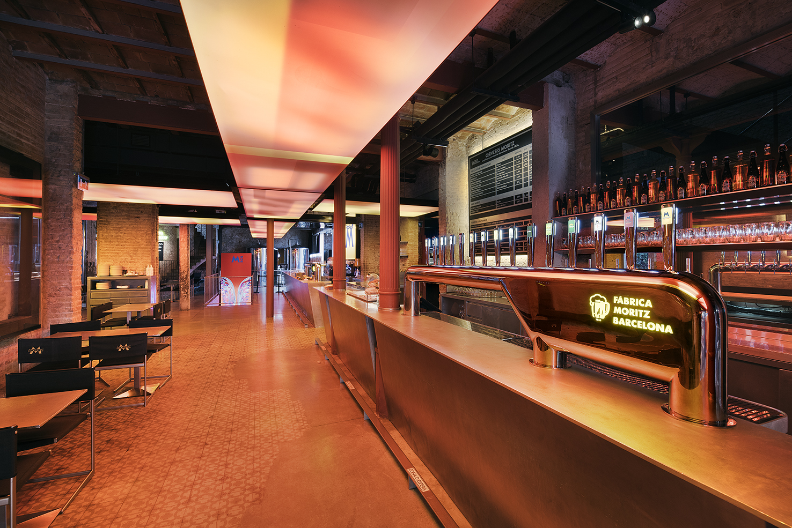
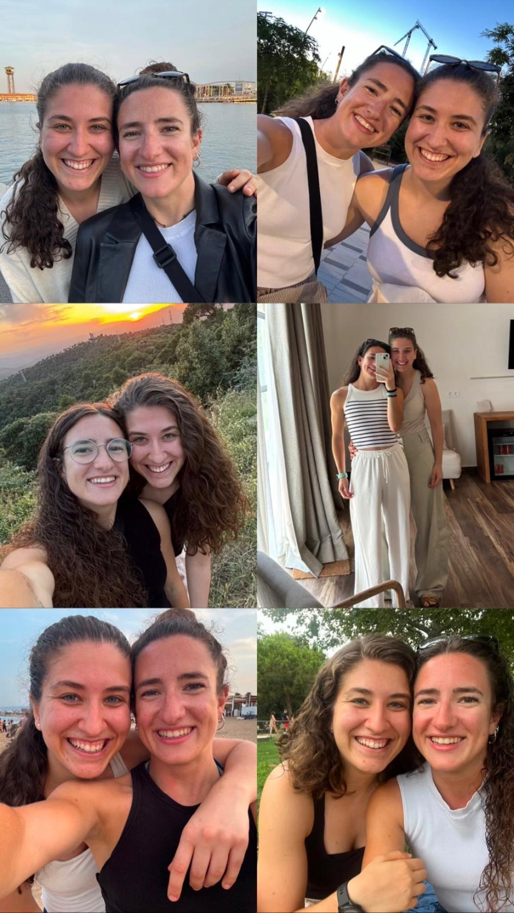
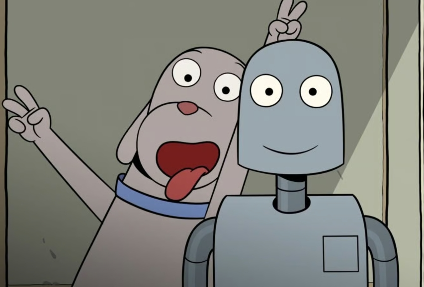

Per la Valle
→
←
No és una opció.
Intenta-ho de nou.



Un any després, crec que me n'adono encara més de la sort que vaig tenir aquell dia. On, sense saber-ho, coneixeria algú molt important per mi.
No només una bona persona, amb idees clares a defensar, preocupada pel que puguin sentir els altres i, de vegades, ratllada en excés i tot per això jajaja.
Sinó algú amb qui em puc obrir, compartir el que em preocupa o el que em passa pel cap, sense pensar si li semblarà una tonteria. Bueno, i amb qui celebrar totes les coses bones que passin també.
Des de que ens vam conèixer per mi cap dia ha sigut igual. I això m'agrada molt de tu. Amb els teus sí a tot... (que jo també ehh... però hi ha plans que saps que no encaixen en el dia de la setmana jajaj). És broma.
Tot i que sí que és veritat que en tonteries com aquestes veig que m'estàs ensenyant coses. Potser a no ser tan quadriculada, i això que tu pots arribar a ser-ho més que jo.
No obstant, el major aprenentatge que crec que estic fent (estic, perquè cada dia aprenc alguna cosa nova) és a estimar-te com sento que et mereixes.
Amb això no em refereixo a aquesta part que surt sola i que penso que és la més fàcil. Sinó, com hem parlat ja alguna vegada, a triar-te també voluntàriament.
Saber en què coincidim, en què no, quines coses són importants per tu, què vol dir un silenci, quin moment no és el millor per picar-te...😌
En definitiva, saber com acompanyar-te per tal que tot es pugui fer una mica menys pesat.
Sento que en això vaig aprenent dia a dia amb tu.
Fent introspecció, seria una quimera si et digués que m'agradaria no fallar-te mai en tot això que et dic.
Al final a viure s'aprèn vivint.
Però hi ha una certesa que sí que m'agradaria que sabessis, i és que sempre que ho necessitis jo hi seré.
Fa temps vaig sentir una frase que no vaig acabar d'entendre. I és que Bukowski deia que l'ésser humà té dos grans defectes: la incapacitat d'arribar puntual i la incapacitat de mantenir les promeses.
Jo no et puc prometre que seré sempre puntual (en el sentit de fer-ho bé a la primera, que saps que a vegades sóc lenta), però sí et puc prometre que passi el que passi hi seré sempre que ho necessitis.
Saps que sempre dic que sóc nefasta pensant què regalar...em passo hores buscant què comprar i després tot ho veig poc pràctic.
Sé que en aquest cas no cal regalar res, però em fa il·lusió que tinguis alguna cosa per recordar aquest any. Així que he decidit fer les coses una mica diferents aquesta vegada.
Com tu diries: he pensat "out of the box" jajaj.
He arribat a la conclusió que el millor regal que se li pot fer a algú és regalar-li el teu temps.
Amb això no vull dir que amb aquest any et donis per regalada jajajaj. Sinó que des de fa un temps he anat escrivint un text curt que crec que sintetitza de la manera més sincera aquest any (des de la meva perspectiva). I que espero que t'agradi.
L'he anat escrivint al tren, a casa, a l'avió, abans de quedar, després... cada vegada que sentia que volia verbalitzar una frase l'anava apuntant per separat, pensant que arribaria un dia en què l'ajuntar-ho tindria sentit.
Al final crec que el té.

Hay caminos que empiezan despacio
como si el tiempo los quisiera cuidar.
Como los ríos que buscan su cauce
sin preguntarse dónde acabar.
Hay un valle de verdes profundos
donde el ruido se aprende a apagar,
y se funde en el cielo azul y el beso salado del mar.
Hay palabras que llegan más tarde
y encuentran su sitio después.
Hay silencios cargados de versos
que ya no quiero romper.
Y qué pena ser ciego en Granada
cuando el sol se decide a bajar,
y se cuela por cada cuesta,
hasta volverlas fáciles de andar.
Un gran lienzo en blanco
y yo sin saber pintar...
Dejo que el alma me sepa guiar.
Y es al dejar este mío tanto pensar
que tu lucero ilumina la línea a trazar.
Son tres los tiempos donde tú estás,
aunque a veces alguno quisiera parar,
para así poder acompasar
el lento romper de las olas del mar.
Y qué pena ser ciego en Granada
cuando el sol se decide a bajar,
e ilumina otro año la ventana
que no quiero dejar de mirar.
“Hay almas a las que uno tiene ganas de asomarse,
como una ventana llena de sol”. F.G.Lorca
Aquesta primera frase la vaig pensar bastant al principi, un dia que just em vas dir lenta jaja i que tu normalment eres més ràpida. I d'aquí vaig voler transmetre que sentia que havia sigut així, perquè era com havia de ser en el nostre cas.
En canvi, la segona va venir de la primera ratllada, on crec que les dues ens preguntàvem una mica cap a on havia de tirar la cosa, si és que havia de tirar. Recordo que d'aquella conversa vam dir que no ho sabíem, però que estàvem bé i potser lo seu era veure com continuava tot plegat, cap a on ens portava (cadascuna un riu paral·lel).
En aquest segon paràgraf hi ha un salt temporal bastant gran. En aquest cas , amb la primera part volia transmetre la pau i serenitat que em dones (tot i que de vegades no t'ho puguis creure). Si hagués de descriure com et percebo seria bastant així. Clarament seria un paisatge de natura i muntanya verda. Imatge en la qual òbviament no pot faltar la referència al teu nom. M'agradava aquí molt la idea de l'horitzó i del cel que s'uneix amb el mar, que també sento una cosa molt teva (el mar i el cor blau). En concret, a la part del final visualitzo un moment que m'agrada molt, però que negaré quan estigui a la platja, que és quan t'estires a sobre i em fas un petó salat del mar.
Aquesta part la veritat que recull per mi dos moments completament diferents, oposats inclús podria arribar a dir. Ho vaig escriure amb molt temps de diferència entre una i altra, però a l'hora d'ajuntar-ho li he trobat un sentit. La primera frase va de la mà de la dels rius. Ve d'un moment d'incomprensió per missatge que em va fer pensar. Però que temps després, amb les paraules que vas utilitzar per explicar-te, vaig comprendre. M'agrada el contrast que fa amb la següent que em transmet dues imatges molt concretes: el despertar a Peralada i quan decideixes no contestar verbalment, sinó que mires a terra i somrius en silenci.
Aquesta primera frase et sona segur perquè te la vaig mencionar. Em va agradar molt l'explicació del significat. És a dir, la pena de qui envoltat d'una grandíssima bellesa (vegana, jaja és broma) no és capaç de veure-la. En aquest cas, la frase per mi pren un altre sentit. Vull plasmar la importància de viure sent conscient del que es té, quan arriba alguna cosa que il·lumina, encara més, el que sempre has vist. De manera que arribes a veure-ho diferent inclús. En aquest cas, amb la metàfora del sol volia aprofitar la imatge tan recurrent dels carrers de l'Albaicín. Carrers blancs, molt empinats, amb unes vistes precioses a l'Alhambra, pels quals em semblava molt maca la imatge del sol entrant per cada racó i fent més fàcils les pujades. En aquest sentit, les pujades són tot allò amb què et vas trobant a la vida i el sol és la llum que ens aporta qui ens envolta per fer el camí més fàcil de recórrer.
Aquí passo a parlar una mica de mi. Volia transmetre el fet que, en certa manera, no em sento segura. Ens visualitzo com una gran tela en blanc, on encara queda molt per pintar. Però amb la incertesa de si ho sabré fer bé. Dubte davant del qual penso i l'única resposta que trobo és que per fer-ho el millor possible he de ser sincera amb el que sento i penso. I en deixar de pensar en excés, veig que les coses poden arribar a ser més fàcils. Acabo dient que el camí no el pinto sola (traient-me responsabilitat) i que és quan em permeto deixar-me guiar, que el camí comença a pintar-se sol.
Aquest en concret és el que recordo de forma més clara. El vaig escriure quan em vas deixar a casa la nit del cine a la platja, mentre esperava que em diguessis que havies arribat (em va sortir ràpid i sense pensar). Amb els tres temps volia expressar: passat, present i futur. Aquella nit m'hauria agradat parar el temps per un moment quan va acabar la pel·lícula i se sentia de fons el compàs tranquil de les ones del mar. Crec que és el paràgraf més senzill d'explicar (sabent el moment que descriu) i clarament, si el poema mostra l'evolució, aquesta és l'últim estrofa que tanca el text abans de la tornada, que ve a continuació per concloure.
Aquí recupero el paràgraf que he explicat abans, però en aquest cas el sol il·lumina una finestra que no vull deixar de mirar. El significat passa a entendre's amb la frase de Lorca.
Aquesta frase la vaig llegir i vaig pensar en tu. Crec que s'explica per si sola. Em va agradar tant que li vaig voler donar un protagonisme.